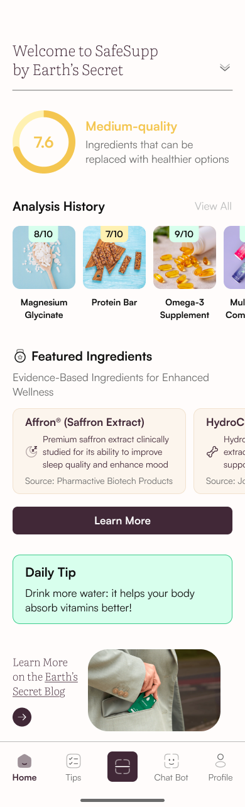
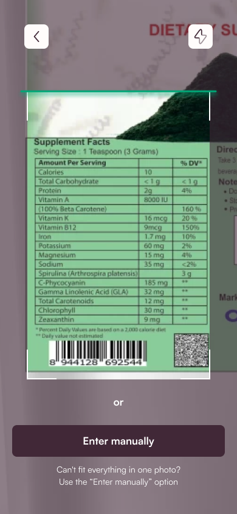
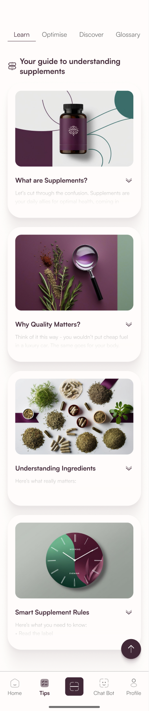
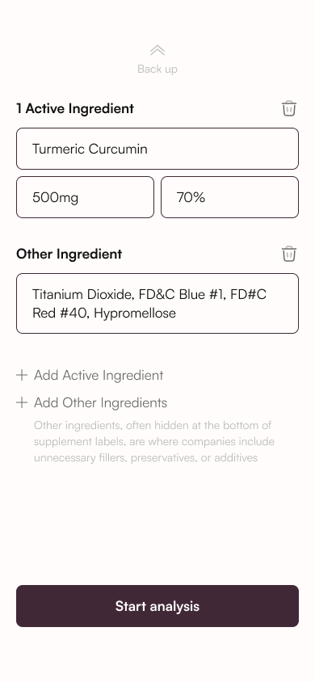
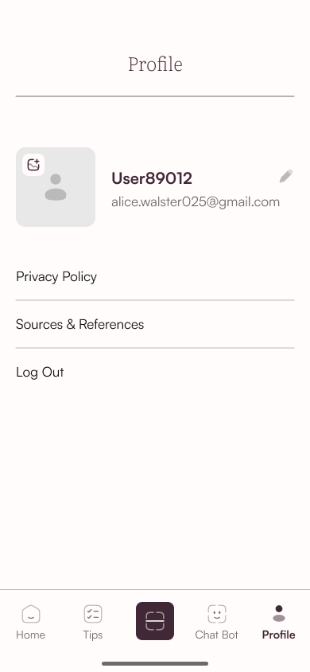

Сканируйте
Сфотографируйте этикетку или введите ингредиенты вручную.
Знайте, что внутри.
Выбирайте уверенно.
От этикетки
к полной картине.



Понятно
о каждом ингредиенте.
Что внутри добавки?
Что значат ингредиенты?
С чего начать?
SafeSupp объединяет сканирование этикеток, объяснение ингредиентов и отслеживание добавок в одном приложении. Дизайн делает сложную тему понятной: ясные точки входа и информация небольшими последовательными шагами.
SafeSupp / Earth’s Secret
UX/UI · Мобильный опыт
Ясность · Навигация · Последовательность
Мобильное приложение
Сфотографируйте этикетку или введите ингредиенты вручную.
Посмотрите оценку и изучите разбор ингредиентов.
Возвращайтесь к анализам и планируйте ежедневный приём добавок.
Введение заранее объясняет, что нужно сканировать и что покажет анализ, прежде чем предложить сделать первое фото.
Одна ясная мысль на каждом экране.
Один очевидный следующий шаг.


Отдельная зона сканирования помогает сосредоточиться на задаче. Заметный ручной ввод даёт запасной путь, если этикетку сложно снять.
Понятная рамка направляет камеру.
Ручной ввод остаётся под рукой.
Общая оценка дополнена разбором каждого ингредиента. Три подписанные категории превращают длинный результат в последовательную структуру, которую легко просматривать.
Все положительные выводы собраны вместе.
Детали, которые стоит изучить внимательнее.
Потенциальные риски легко найти.
Цвет поддерживает сообщение.
Смысл остаётся в текстовых подписях.
Сохранённые анализы, дневник добавок и обучающие материалы продолжают опыт после первого результата.

Предыдущие сканы всегда под рукой.

Место для ваших добавок.

Изучайте в своём темпе.
Чистый гротеск для навигации,
действий и информации об ингредиентах.
Лёгкая антиква для заголовков
и более редакционного ритма.
Тёмный сливовый удерживает интерфейс. Нефритовый отмечает сканирование. Мягкие смысловые поверхности организуют результаты.
BASED ON THE APPLICATION’S FIGMA STYLES

